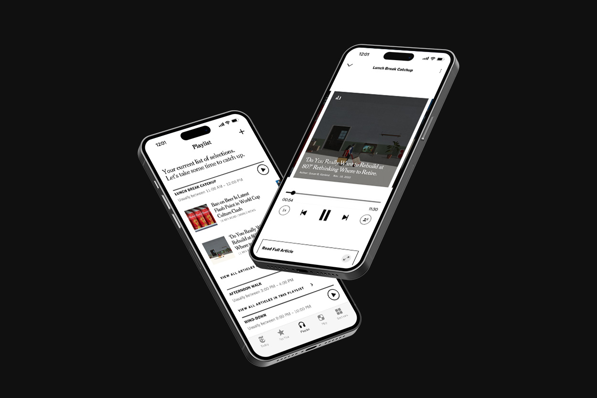

New York Times Playlist
NY Times Playlist is an addition to the existing mobile platform that allows people to engage with NY Times content at times that fit within their daily schedule.
Role
User Research, Strategy, Content Design
Team
Jonathan Choi, Joanna Lee, Karishma Sen, Soraya Elchehimi
Duration
Fall 2022, 6 Weeks
Problem Space
Business Opportunity
NY Times has been heavily focused on digital subscription growth. In recent years, they have been successful and remain focused on maintaining it. However, this growth was largely driven by offering a promotional rate and when it came time to renew, many readers would unsubscribe.
Research Insights
Through our research we identified the primary reason for cancellation was because readers did not feel they had enough time to read the news. They would spend time in the morning to plan out their day and if reading the NY Times was not included, then they would not engage with it.
I just don’t have the time to sit and read a newspaper anymore without a long commute on public transportation.
Survey Respondent – Nieman Lab, "Cancel Culture: Why do People Cancel News Subscriptions?"
Framing
We saw an opportunity to retain subscribers by providing a means to consume NY Times content in methods that fit their busy schedules. With our research and insights in mind we asked ourselves,
How might we help an occasional reader form a routine to integrate daily news consumption into their day to day lives?
Proposed Solution
In order to retain existing subscriber who do not make the time to read, we propose audio-based article playlists to help occasional readers consume news content at times that fit within their busy schedules.
NY Times Playlist Walkthrough
Convenience of Listening
If I have the time and am multi-tasking, I’ll listen to it instead of reading the whole thing.
Sprint Interviewee – Wall Street Journal Subscriber
Moments of Free Time
5 out of 7 interviewees stated that their morning routine involved planning the day with a calendar
Sprint Interviews
Headline Browsing
70% of Americans only read and skim headlines when they first engage with news
Research Centre Columbia University + the French National Institute
Feature Breakdown
Your Pace, Your Medium
Article playlists allow readers’ to integrate news content throughout their day– without having to allocate specific times to read. Progress tracking allows readers to pause, and pick up where they left off when needed.
Notify the Moments
Readers with busy schedules can identify moments in their day to send themselves push notifications so they can keep up with the news.
Just “For You”
Playlists will be created by a reader based off headlines that catch their interest. Self curation ensures that their limited time is spent on content that is important to them.
Value Added
For Readers
Provide an alternative method to engage with news content
Identify and schedule time to regularly read news during moments of free time
Able to stay up to date with news as it develops throughout the day
For New York Times
Integrate news consumption into a reader’s daily life to create an engaged audience
Helping readers maximize the value from a subscription in order to retain subscribers
Reflection
The challenge with this project was identifying a problem space where design could intervene. Once the business opportunity was identified, through user research we were able to identify what aspects were desirable and which parts needed refinement.
Through this project I learned how we can identify a concept in one domain and translate that into another context to provide simple, but effective solution. One consideration for the future would be how the audio aspect can be implemented from the development side of the business.